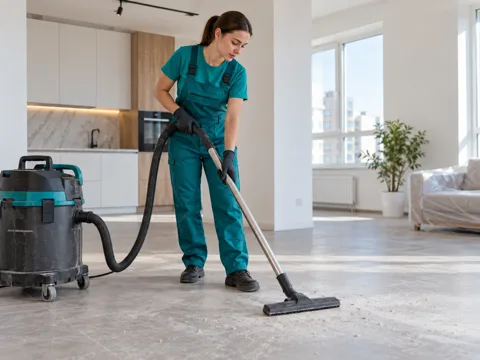

Tozalash mutaxassisi kelishidan oldin uyni qanday tayyorlash kerak?
Shaxsiy buyumlar, kerakli joylarga kirish va kelishilgan vazifalar bo‘yicha amaliy qo‘llanma.
Uy, mebel va tijorat obyektlarini toza saqlashga yordam beradigan amaliy qo‘llanmalar.
Shaxsiy buyumlar, kerakli joylarga kirish va kelishilgan vazifalar bo‘yicha amaliy qo‘llanma.

Kelishilgan ishlarni xona bo‘yicha belgilash va natijani tekshirish uchun chop etiladigan 8 bandli ro‘yxat.